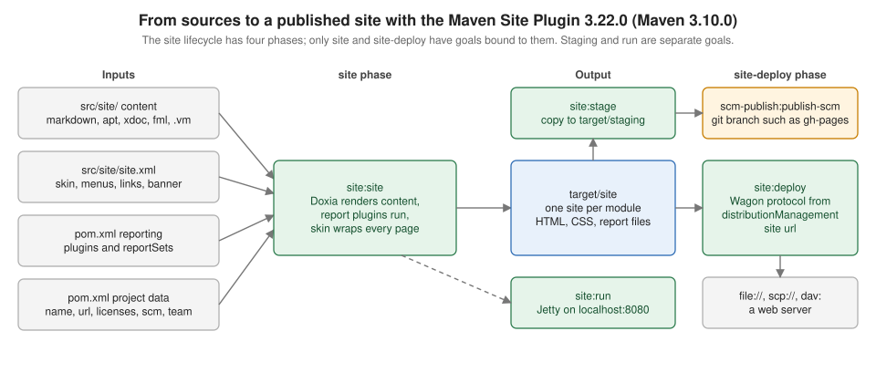

Maven Site & Reporting
|
This content was generated with the assistance of AI and should be verified against the official documentation before being relied on in production. |
This page is written against Apache Maven 3.10.0 with the Apache Maven Site Plugin 3.22.0 (the version Maven 3.10.0 binds to the
site phase) and the Project Info Reports Plugin 3.9.0. The examples were run on 2026-10-16 in scratch copies of the tidepool
project (a parent POM with the tidepool-model and tidepool-engine modules and, for the aggregate coverage report, a third
tidepool-coverage module). Builds that run the quality plugins used JDK 21, because PMD 7.17 cannot read JDK 26 class files (the
error is shown below); the other builds used JDK 26. The same builds were also run on Maven 3.9.16 and on Maven 4.0.0-rc-7 (a
release candidate, not a final release), and the differences are stated. Paths in the console output were shortened to /work/site,
the Loaded N auto-discovered prefixes lines and the many argLine set to lines of JaCoCo were left out, and long output was
filtered with grep, which is said each time. Nothing was published to a real server: sites were deployed to a file:// directory and
to a local bare Git repository, and the scp and GitHub examples are labelled "not run here".
Maven calls the generated web page of a project its site. It is a set of HTML pages built from two kinds of input: hand-written
documents in src/site, and reports that the plugins listed in the <reporting> section of the POM produce (project information,
Javadoc, test results, coverage, static analysis). This page covers the site lifecycle, the descriptor that arranges the pages, the
reporting configuration and the reports that matter in practice, and how to preview and publish the result. The lifecycle itself
is in Maven Build Lifecycle, plugin configuration in
Plugins & Their Configuration, the
coordinates and metadata that the reports print in
POM Fundamentals, and the modules that the aggregate reports sum up in
Multi-Module Builds & the Reactor. The Spring
Boot flavour of the quality plugins, with failing thresholds, is on
Maven Quality Plugins for Spring Boot; the Java overview is
Java Build & Tooling.

The site lifecycle and the Site Plugin
The site lifecycle has four phases, pre-site, site, post-site and site-deploy, and the plugin binds one goal to two of them:
site:site to site and site:deploy to site-deploy. The lifecycle is separate from the default and the clean lifecycle, so
mvn site neither compiles nor tests (reports that need the classes start a forked compile, which is explained below). The Site
Plugin has nine goals:
| Goal | What it does |
|---|---|
|
Renders the site of one project into |
|
Uploads |
|
Starts Jetty and renders documents on demand, for fast preview of a single module. |
|
Copies the site (of every module of a multi-module build) to a local |
|
Deploys that staging layout to a remote staging URL. |
|
Adds |
|
Packs the generated site into |
|
Prints the descriptor after inheritance and interpolation. |
Source: Apache Maven Site Plugin
What mvn site does with no configuration
A POM with no <reporting> section and no src/site still produces a site: the plugin adds the Project Info Reports itself. The
smallest possible example is a POM with only coordinates and <packaging>pom</packaging>, run on the three Maven versions of this
page (output filtered to the lines that differ):
mvn -B -ntp siteApache Maven 3.9.16:
[INFO] --- site:3.12.1:site (default-site) @ nopin ---
[WARNING] Report plugin org.apache.maven.plugins:maven-project-info-reports-plugin has an empty version.
[WARNING] No project URL defined - decoration links will not be relativized!
[INFO] Rendering content with org.apache.maven.skins:maven-default-skin:jar:1.3 skin.
[WARNING] An issue has occurred with maven-project-info-reports-plugin:3.9.0:dependency-info report, skipping LinkageError 'void org.apache.maven.doxia.sink.Sink.verbatim()', please report an issue to Maven dev team.
[INFO] BUILD SUCCESS
Apache Maven 3.10.0:
[INFO] --- site:3.22.0:site (default-site) @ nopin ---
[WARNING] Report plugin org.apache.maven.plugins:maven-project-info-reports-plugin has an empty version.
[INFO] Detected 15 reports for maven-project-info-reports-plugin:3.9.0: ci-management, dependencies, dependency-info, dependency-management, ...
[WARNING] No project URL defined - site links will not be relativized!
[INFO] Rendering content with org.apache.maven.skins:maven-fluido-skin:jar:2.0.0-M9 skin
[INFO] BUILD SUCCESS
Apache Maven 4.0.0-rc-7:
[WARNING] Version not locked for default bindings plugins [maven-site-plugin], you should define versions in pluginManagement section of your pom.xml or parent
[INFO] --- site:3.22.0:site (default-site) @ nopin ---
[WARNING] Report plugin org.apache.maven.plugins:maven-project-info-reports-plugin has an empty version.
[INFO] Rendering content with org.apache.maven.skins:maven-fluido-skin:jar:2.0.0-M9 skin
[INFO] BUILD SUCCESS(The three runs were joined under headings and the list of detected reports was cut, which the ... marks.) Four things are visible:
-
The plugin version follows the Maven version. Maven 3.9.16 binds Site Plugin 3.12.1 and renders with the old Maven default skin 1.3, and with the Project Info Reports Plugin 3.9.0 that the older plugin resolved it printed a
LinkageErrorfor thedependency-inforeport and skipped it (a mismatch between that report and the older Doxia of Site Plugin 3.12.1). Maven 3.10.0 and Maven 4.0.0-rc-7 bind 3.22.0 and render with Maven Fluido Skin 2.0.0-M9. Pin the Site Plugin inpluginManagement, as the other pages of this section do. -
The "empty version" warning comes from the report plugin the Site Plugin adds on its own, because the POM has no
<reporting>section. Declaringmaven-project-info-reports-pluginwith a version in<reporting>(below) removes it. -
"No project URL defined": without a
<url>in the POM the plugin cannot make absolute links in the descriptor relative. Set<url>for every project that is deployed. -
Maven 4.0.0-rc-7 only adds the usual warning about a default binding without a locked version.
Maven 3.9.16 also warns Input file encoding has not been set, using platform encoding UTF-8; Maven 3.10.0 defaults
project.build.sourceEncoding and project.reporting.outputEncoding to UTF-8 and stays quiet. Setting both properties in the
POM is still the portable choice.
Source: Site Plugin: site:site
mvn site in a multi-module build before anything is packaged
The same bare POM as a parent with two modules, where tidepool-engine depends on tidepool-model, and no <reporting>
configuration, fails on a clean tree. mvn clean site on Maven 3.10.0:
[INFO] tidepool-parent .................................... SUCCESS [ 3.124 s]
[INFO] tidepool-model ..................................... SUCCESS [ 0.861 s]
[ERROR] tidepool-engine .................................... FAILURE [ 0.011 s]
[ERROR] Failed to execute goal on project tidepool-engine: Could not resolve dependencies for project io.tidepool:tidepool-engine:jar:1.0.0-SNAPSHOT
[ERROR] dependency: io.tidepool:tidepool-model:jar:1.0.0-SNAPSHOT (compile)
[ERROR] prefixes: Path io/tidepool/tidepool-model/1.0.0-SNAPSHOT/tidepool-model-1.0.0-SNAPSHOT.jar NOT allowed from central(The reactor lines and the error were filtered with grep, and the elapsed times are from the first run.) The site phase does not
run compile or package, so the sibling module has no JAR or target/classes for the reactor to hand to tidepool-engine, and
Maven looks for it in Central. Maven 3.9.16 reports the same problem as Could not find artifact
io.tidepool:tidepool-model:jar:1.0.0-SNAPSHOT, and Maven 4.0.0-rc-7 adds a longer explanation about remote repository filtering. The
Maven 3.10.0 wording ("NOT allowed from central") is the Resolver 2 prefix filter, which refuses to ask Central for a group path
Central does not have.
Two things make the build pass. Run a lifecycle phase that produces the classes or the artifacts before the site, such as
mvn package site (compile site also worked on Maven 3.10.0), or configure a report that forks the compile phase. The aggregate
Javadoc and JXR reports of the parent below do: their log lines say Preparing maven-javadoc-plugin:aggregate report requires
'compile' forked phase execution. That is why the full example project builds with a plain mvn clean site once they are in the POM
(run on all three Maven versions). mvn package site on the bare project:
[INFO] tidepool-parent .................................... SUCCESS [ 1.806 s]
[INFO] tidepool-model ..................................... SUCCESS [ 1.461 s]
[INFO] tidepool-engine .................................... SUCCESS [ 0.965 s]
[INFO] BUILD SUCCESSThe example project
The parent POM carries the metadata that the information reports print, the Site Plugin pinned in pluginManagement, and the
distributionManagement/site location. The <url> of the organization and of the project is on the example.org test domain.
The URL of the site is a local directory here; the path was shortened.
<name>Tidepool</name>
<description>Tide predictions from harmonic constituents.</description>
<url>https://tidepool.example.org/</url>
<inceptionYear>2026</inceptionYear>
<organization>
<name>Tidepool Project</name>
<url>https://tidepool.example.org/</url>
</organization>
<licenses>
<license>
<name>Apache License, Version 2.0</name>
<url>https://www.apache.org/licenses/LICENSE-2.0.txt</url>
</license>
</licenses>
<developers>
<developer>
<id>ada</id>
<name>Ada Example</name>
<email>ada@tidepool.example.org</email>
<roles><role>maintainer</role></roles>
</developer>
</developers>
<scm>
<connection>scm:git:https://git.example.org/tidepool.git</connection>
<developerConnection>scm:git:ssh://git@git.example.org/tidepool.git</developerConnection>
<url>https://git.example.org/tidepool</url>
<tag>HEAD</tag>
</scm>
<issueManagement>
<system>GitHub</system>
<url>https://git.example.org/tidepool/issues</url>
</issueManagement>
<ciManagement>
<system>GitHub Actions</system>
<url>https://git.example.org/tidepool/actions</url>
</ciManagement>
<distributionManagement>
<site>
<id>tidepool-site</id>
<url>file:///work/site/deploy/tidepool</url>
</site>
</distributionManagement>name, description, url, inceptionYear, organization (its name is the copyright line in the page footer), licenses, developers,
scm, issueManagement and ciManagement each feed one project-info report (summary, licenses, team, scm, issue-management,
ci-management). Elements that are missing make the report say so rather than fail. The <site> element in
distributionManagement is the deployment target and, in a multi-module build, the root that every module’s own URL hangs under.
Site content in src/site
Everything under src/site is optional. The layout is one directory per Doxia markup, a resources directory that is copied
as it is, and the site.xml descriptor:
src/site/
site.xml
markdown/index.md.vm
markdown/constituents.md
apt/usage.apt
xdoc/about.xml
fml/faq.fml
resources/css/site.cssThe Maven guide recommends Markdown for new documents; APT ("Almost Plain Text") is still supported but is the legacy choice,
FML is the FAQ format and Xdoc is a small XML dialect. All of them were rendered on Maven 3.10.0 with the Doxia Site Renderer 2.1.0 (a .md.vm file is
a Markdown file that is first run through Velocity). The log line of a build with all four formats, with the report
generation switched off to keep the output short (-DgenerateReports=false):
[INFO] Rendering site for default locale
[INFO] Rendering content with org.apache.maven.skins:maven-fluido-skin:jar:2.1.0 skin
[INFO] Rendering 5 Doxia documents: 1 apt, 1 fml, 2 markdown, 1 xdoc
[INFO] BUILD SUCCESSand the pages it wrote into target/site: about.html, constituents.html, faq.html, index.html and usage.html, plus
the skin’s css, fonts, images, img and js directories. A page named index in src/site is the home page. If you do not
provide one, the "About" report of the Project Info Reports Plugin provides it, and when both exist the hand-written one wins; the
build says so (this line was printed for the index page of the example project):
[INFO] Skipped "About" report (maven-project-info-reports-plugin:3.9.0:index), file "index.html" already exists.The Site Plugin has no cleaning logic of its own: it compares timestamps and renders only documents that changed, so after you
change site.xml, the POM or a property, run mvn clean site.
Velocity filtering and properties
Maven does not interpolate ${project.version} in a plain Markdown file. In the example, index.md contained the sentence
Built from version ${project.version}. and rendered it as it is:
<p>Built from version ${project.version}.</p>Renaming the file to index.md.vm makes Doxia run it through Velocity first, and the same sentence became
<p>Built from version 1.0.0-SNAPSHOT.</p>. Velocity treats $ and # followed by a letter or a brace (#set, #if) as syntax, so a
Markdown heading with # followed by a space is fine but a dollar amount or a #set in the text has to be escaped. The
descriptor site.xml is interpolated without the .vm suffix: it may use ${project.name}, ${project.organization.name} and any property or environment variable.
Source: Maven guide: Creating a site
Source: Doxia markup language references
The site descriptor: site.xml
src/site/site.xml chooses the skin and arranges the navigation. The one used by the example project, with the Fluido skin 2.1.0
(the version the Maven guide uses; the Site Plugin default is 2.0.0-M9):
<?xml version="1.0" encoding="UTF-8"?>
<site xmlns="http://maven.apache.org/SITE/2.1.0"
xmlns:xsi="http://www.w3.org/2001/XMLSchema-instance"
xsi:schemaLocation="http://maven.apache.org/SITE/2.1.0 https://maven.apache.org/xsd/site-2.1.0.xsd"
name="Tidepool">
<skin>
<groupId>org.apache.maven.skins</groupId>
<artifactId>maven-fluido-skin</artifactId>
<version>2.1.0</version>
</skin>
<body>
<links>
<item name="Source" href="https://git.example.org/tidepool"/>
</links>
<menu name="Tidepool">
<item name="Introduction" href="index.html"/>
<item name="Harmonic constants" href="constituents.html"/>
</menu>
<menu ref="modules"/>
<menu ref="reports"/>
</body>
</site>The elements, by area:
| Element | Use |
|---|---|
|
A skin artifact. Always give the version, or the latest one is used and the site changes under you. Without a skin the Site Plugin uses the default skin of the Site Plugin version, shown above as 2.0.0-M9 for Maven 3.10.0. |
|
Logos at the top ( |
|
Where the "Last Published" date and the project version appear ( |
|
"Powered by" logos. |
|
A bar of links below the logo, and the breadcrumb trail, listed from the highest level to the lowest. |
|
A hand-written menu of |
|
Raw XHTML inserted in |
|
Skin-specific settings, such as the Fluido |
Menu items link to the HTML name a document gets, so src/site/apt/usage.apt is usage.html.
Inheritance, site:effective-site and site:attach-descriptor
A child project inherits its parent’s descriptor, but not everything. The descriptor of tidepool-engine, printed by
mvn -pl tidepool-engine site:effective-site on Maven 3.10.0 (comments and blank lines removed):
<site xsi:schemaLocation="http://maven.apache.org/SITE/2.1.0 https://maven.apache.org/xsd/site-2.1.0.xsd" xmlns="http://maven.apache.org/SITE/2.1.0"
xmlns:xsi="http://www.w3.org/2001/XMLSchema-instance">
<publishDate />
<version />
<skin>
<groupId>org.apache.maven.skins</groupId>
<artifactId>maven-fluido-skin</artifactId>
<version>2.1.0</version>
</skin>
<body>
<links>
<item name="Source" href="https://git.example.org/tidepool" />
</links>
</body>
</site>The skin and the <links> came from the parent, and the parent’s Tidepool menu did not: menus are not inherited unless the menu
carries inherit="top" or inherit="bottom". Links and breadcrumbs accumulate. When the parent is not in the same checkout,
for example a company parent POM that was installed, the child only sees its descriptor if the parent attached it, because in
Maven 3 the descriptor is not an artifact by itself. The example parent does so with an execution of site:attach-descriptor:
<plugin>
<artifactId>maven-site-plugin</artifactId>
<executions>
<execution>
<id>attach-descriptor</id>
<goals><goal>attach-descriptor</goal></goals>
</execution>
</executions>
</plugin>mvn -N install on the parent then printed (the second Installing line is the descriptor):
[INFO] --- site:3.22.0:attach-descriptor (attach-descriptor) @ tidepool-parent ---
[INFO] Attaching 'src/site/site.xml' site descriptor with classifier 'site'.
[INFO] Installing /work/site/fp/pom.xml to /work/site/m2/io/tidepool/tidepool-parent/1.0.0-SNAPSHOT/tidepool-parent-1.0.0-SNAPSHOT.pom
[INFO] Installing /work/site/fp/target/tidepool-parent-1.0.0-SNAPSHOT-site.xml to /work/site/m2/io/tidepool/tidepool-parent/1.0.0-SNAPSHOT/tidepool-parent-1.0.0-SNAPSHOT-site.xmlA skin needs a matching Site Plugin
The Site Plugin 4.0.0-M16 is a milestone for the Maven 4 era and is the version Maven resolves when you call a goal by its prefix on a project that does not pin the plugin. It uses a newer Doxia Sitetools than the stable 3.22.0, and the skins have to match. The example project with the Site Plugin set to 4.0.0-M16 on Maven 4.0.0-rc-7 and the Fluido skin 2.1.0:
[ERROR] Failed to execute goal org.apache.maven.plugins:maven-site-plugin:4.0.0-M16:site (default-site) on project tidepool-parent: Failed to create context for skin: Cannot use skin: has 2.0.0 Doxia Sitetools prerequisite, but current is 2.0.0-M19The skin asks for Doxia Sitetools 2.0.0 and the milestone plugin ships 2.0.0-M19. Stay on 3.22.0 and Fluido 2.1.0 for now, or use a
skin release built for the milestone. The same hazard exists on Maven 3.10.0: on the unpinned bare POM, mvn site used
site:3.22.0 through the lifecycle, while mvn site:site resolved the newest release in the plugin metadata and printed
--- site:4.0.0-M16:site (default-cli). The two ways to run the "same" goal used two different plugin versions. Pinning the plugin in
pluginManagement fixes both.
Source: Site Plugin: History
Reporting configuration
The Maven guide divides plugins into build plugins, configured in <build> and executed during the build, and reporting plugins, configured in
<reporting> and executed during the site generation. The Site Plugin reads the list at site time and asks each plugin for its reports. A plugin that is both a build plugin and
a reporting plugin (Surefire, Javadoc, Checkstyle, JaCoCo and others) therefore has two separate places for its configuration. Since
Site Plugin 3.4, the reporting plugin also gets the <configuration> of <build><pluginManagement>, so the shared
configuration belongs there. The check that this works, on Maven 3.10.0: with configLocation set to google_checks.xml in <reporting>
the report says with google_checks.xml ruleset, and after moving the setting into pluginManagement as sun_checks.xml, and
removing it from <reporting>, the report said:
The following document contains the results of Checkstyle 9.3 with sun_checks.xml ruleset.The Maven guide recommends the version of a reporting plugin in <reporting> and, too, in pluginManagement. An execution in <build>
that runs the same plugin (a check goal that breaks the build) and a report in <reporting> are independent of each other, so settings
that both need go in pluginManagement or in a property.
Report sets
A plugin listed in <reporting> without <reportSets> runs every reporting goal it has, once. A <reportSet> chooses the goals,
and gives them an <id> and an <inherited> flag, and optionally its own <configuration>. This is the pattern for plugins that have
aggregate reports (Javadoc, JXR, Checkstyle, SpotBugs, Surefire Report and JaCoCo): the per-module report in a set that is inherited,
the aggregate report in a set with <inherited>false</inherited>, so that only the parent runs it. The beginning of the
reporting section of the example project, with the project-info reports and Javadoc:
<reporting>
<plugins>
<plugin>
<artifactId>maven-project-info-reports-plugin</artifactId>
<version>3.9.0</version>
<reportSets>
<reportSet>
<reports>
<report>summary</report>
<report>dependencies</report>
<report>dependency-info</report>
<report>licenses</report>
<report>team</report>
<report>scm</report>
<report>issue-management</report>
<report>ci-management</report>
<report>distribution-management</report>
<report>plugins</report>
</reports>
</reportSet>
</reportSets>
</plugin>
<plugin>
<artifactId>maven-javadoc-plugin</artifactId>
<version>3.12.0</version>
<reportSets>
<reportSet>
<id>default</id>
<reports>
<report>javadoc</report>
</reports>
</reportSet>
<reportSet>
<id>aggregate</id>
<inherited>false</inherited>
<reports>
<report>aggregate</report>
</reports>
</reportSet>
</reportSets>
</plugin>Without the project-info reportSets the plugin runs all of its 16 reports, as the bare run above showed (Detected 16 reports: ci-management,
dependencies, dependency-convergence, dependency-info, dependency-management, distribution-management, index, issue-management,
licenses, mailing-lists, modules, plugin-management, plugins, scm, summary and team). dependency-convergence and modules
are the slow or noisy ones, and the About report (index) is the one that the hand-written home page replaces.
A plugin without reportSets that has aggregate goals runs them in every module: the Site Plugin documentation warns about exactly that. SpotBugs
without a reportSets was listed as Detected 2 reports for spotbugs-maven-plugin:4.10.5.0: spotbugs, spotbugs-aggregate.
Source: Site Plugin: Configuring reports
Source: POM reference: Report Sets
The report plugins used in this page
All of them were run on Maven 3.10.0 in the example project and produced the files shown. Each module’s site is in
<module>/target/site; the parent’s is in target/site.
| Plugin | Version | Reports used | Output in target/site |
|---|---|---|---|
|
3.9.0 |
|
|
|
3.12.0 |
|
|
|
3.6.0 |
|
|
|
3.6.0 |
|
|
|
0.8.15 |
|
|
|
3.6.0 |
|
|
|
3.28.0 |
|
|
|
4.10.5.0 |
|
|
|
2.23.0 |
|
|
After mvn clean verify site, the log of the engine module (filtered with grep to the report lines) lists them in the order the plugins
appear in the POM, project-info first and the two Site Plugin pages (project-info.html and project-reports.html, the index of
generated reports) last:
[INFO] --- site:3.22.0:site (default-site) @ tidepool-engine ---
[INFO] Configured 10 reports for maven-project-info-reports-plugin:3.9.0: summary, dependencies, dependency-info, licenses, team, scm, issue-management, ci-management, distribution-management, plugins
[INFO] Configured 1 report for maven-javadoc-plugin:3.12.0: javadoc
[INFO] Configured 2 reports for maven-jxr-plugin:3.6.0: jxr, test-jxr
[INFO] Configured 1 report for maven-surefire-report-plugin:3.6.0: report-only
[INFO] Configured 1 report for jacoco-maven-plugin:0.8.15: report
[INFO] Configured 1 report for maven-checkstyle-plugin:3.6.0: checkstyle
[INFO] Configured 2 reports for maven-pmd-plugin:3.28.0: pmd, cpd
[INFO] Configured 1 report for spotbugs-maven-plugin:4.10.5.0: spotbugs
[INFO] Configured 2 reports for versions-maven-plugin:2.23.0: dependency-updates-report, plugin-updates-report
[INFO] Rendering content with org.apache.maven.skins:maven-fluido-skin:jar:2.1.0 skin
[INFO] Rendering 23 report documents
[INFO] Generating "Summary" report --- maven-project-info-reports-plugin:3.9.0:summary
[INFO] Generating "Javadoc" report --- maven-javadoc-plugin:3.12.0:javadoc
[INFO] Generating "Source Xref" report --- maven-jxr-plugin:3.6.0:jxr
[INFO] Generating "Surefire" report --- maven-surefire-report-plugin:3.6.0:report-only
[INFO] Generating "JaCoCo" report --- jacoco-maven-plugin:0.8.15:report
[INFO] Generating "Checkstyle" report --- maven-checkstyle-plugin:3.6.0:checkstyle
[INFO] Generating "PMD" report --- maven-pmd-plugin:3.28.0:pmd
[INFO] Generating "CPD" report --- maven-pmd-plugin:3.28.0:cpd
[INFO] Generating "SpotBugs" report --- spotbugs-maven-plugin:4.10.5.0:spotbugs
[INFO] Generating "Dependency Updates Report" report --- versions-maven-plugin:2.23.0:dependency-updates-report
[INFO] Generating "Project Information" report --- maven-site-plugin:3.22.0:project-info
[INFO] Generating "Generated Reports" report --- maven-site-plugin:3.22.0:project-reports(Only one line per plugin of the 23 Generating lines is shown, which is why the count does not match.)
Javadoc and source cross-reference
The Javadoc report writes apidocs/ for the main classes. The aggregate goal in the parent builds one Javadoc tree over the sources
of all modules (in the example, target/site/apidocs). The per-module javadoc and jxr reports fork the lifecycle up to
generate-sources (test-jxr up to generate-test-sources) and the aggregate reports fork compile for every module, as the log shows
(>>> jxr:3.6.0:jxr (default-site) > generate-sources @ tidepool-model >>>). JXR makes the class names in the Surefire and Checkstyle
reports links to the highlighted source (xref/, xref-test/ for tests).
A classic failure is the test-javadoc report, which runs javadoc on the test sources. In the example, the tests are package-private
classes, and the build with the default report set of Javadoc (all reporting goals) stopped on Maven 3.10.0 with:
[ERROR] Failed to execute goal org.apache.maven.plugins:maven-site-plugin:3.22.0:site (default-site) on project tidepool-model: Error generating maven-javadoc-plugin:3.12.0:test-javadoc report:
[ERROR] Exit code: 1
[ERROR] error: No public or protected classes found to document.The <reportSets> above names javadoc only, which avoids it. Records without @param tags only warn (warning: no @param for amplitude);
the example sources have the tags so that the build is quiet.
Source: Apache Maven JXR Plugin
Test and coverage reports
Surefire report
The Surefire Report Plugin renders the XML files of target/surefire-reports. Use the report-only goal in <reporting>: the
report goal runs the tests again. The aggregate version is report-only with the parameter aggregate set to true in a report set of the parent that
is not inherited. Both sets write a file named surefire.html by default and the second one is skipped, so give the aggregate a
different outputName. This is the set from the example POM:
<plugin>
<artifactId>maven-surefire-report-plugin</artifactId>
<version>3.6.0</version>
<reportSets>
<reportSet>
<id>default</id>
<reports>
<report>report-only</report>
</reports>
</reportSet>
<reportSet>
<id>aggregate</id>
<inherited>false</inherited>
<configuration>
<aggregate>true</aggregate>
<outputName>surefire-aggregate</outputName>
</configuration>
<reports>
<report>report-only</report>
</reports>
</reportSet>
</reportSets>
</plugin>With the same outputName the log of the first attempt said (from the debug run, -X, filtered):
[INFO] Configured 2 reports for maven-surefire-report-plugin:3.6.0: report-only, report-only
[INFO] Skipped "Surefire" report (maven-surefire-report-plugin:3.6.0:report-only), file "surefire.html" already exists.The aggregate has a second trap: mvn verify site builds the parent’s site before the modules have run their tests, because
Maven runs all goals of the command line for one project before the next one. The parent’s surefire-aggregate.html then reports 0 tests. Running the build in two steps,
mvn clean verify and then mvn site, filled it, with the result Tests 2, Errors 0, Failures 0, Skipped 0, Success Rate 100%. The second
command succeeded without install, on Maven 3.9.16, 3.10.0 and 4.0.0-rc-7: the modules' JARs from the verify run are still in
their target directories and the reactor finds them. Reports that work from source (Javadoc, JXR, Checkstyle) do not have the problem.
JaCoCo
The JaCoCo agent has to be attached to the test JVM before the report can exist. prepare-agent sets the argLine property
that Surefire passes to the forked JVM (an argLine of your own has to include @{argLine}, see
Testing with Surefire); the example parent binds it for every
module:
<plugin>
<groupId>org.jacoco</groupId>
<artifactId>jacoco-maven-plugin</artifactId>
<version>0.8.15</version>
<executions>
<execution>
<goals><goal>prepare-agent</goal></goals>
</execution>
</executions>
</plugin>The agent writes target/jacoco.exec; the report goal in <reporting> turns it into target/site/jacoco/. In a module without that
file the report says so and is skipped:
[INFO] Skipping JaCoCo execution due to missing execution data file.
[INFO] Skipping org.jacoco:jacoco-maven-plugin:0.8.15:report report(This was printed for the parent, which has no tests.) report-aggregate sums the coverage of the dependencies of the project that
runs it, not of its child modules, so running it in the parent of a multi-module build gives an empty report. The standard
layout adds a module that depends on the modules to be measured and runs the aggregate goal there. In the example, tidepool-coverage
has packaging pom, depends on tidepool-model and tidepool-engine, and its reporting section is:
<reporting>
<plugins>
<plugin>
<groupId>org.jacoco</groupId>
<artifactId>jacoco-maven-plugin</artifactId>
<reportSets>
<reportSet>
<reports>
<report>report-aggregate</report>
</reports>
</reportSet>
</reportSets>
</plugin>
</plugins>
</reporting>It is built after its dependencies, so mvn verify site works in one command. The log of that module:
[INFO] Generating "JaCoCo Aggregate" report --- jacoco-maven-plugin:0.8.15:report-aggregate
[INFO] Loading execution data file /work/site/fp/tidepool-model/target/jacoco.exec
[INFO] Loading execution data file /work/site/fp/tidepool-engine/target/jacoco.exec
[INFO] Analyzed bundle 'tidepool-model' with 4 classes
[INFO] Analyzed bundle 'tidepool-engine' with 2 classesThe report page for the two modules showed a total of 72 missed of 200 instructions (64 percent), tidepool-engine 60 percent and
tidepool-model 75 percent.
A report only shows numbers; the build keeps passing. To fail the build under a threshold, use the check goal in <build>.
The rule below requires 80 percent of instructions per bundle. On the example it failed in tidepool-model, whose single test covers
little (mvn verify, Maven 3.10.0, JDK 21):
<execution>
<id>check</id>
<phase>verify</phase>
<goals><goal>check</goal></goals>
<configuration>
<rules>
<rule>
<element>BUNDLE</element>
<limits>
<limit>
<counter>INSTRUCTION</counter>
<value>COVEREDRATIO</value>
<minimum>0.80</minimum>
</limit>
</limits>
</rule>
</rules>
</configuration>
</execution>[INFO] --- jacoco:0.8.15:check (check) @ tidepool-model ---
[INFO] Loading execution data file /work/site/fp6/tidepool-model/target/jacoco.exec
[WARNING] Rule violated for bundle tidepool-model: instructions covered ratio is 0.12, but expected minimum is 0.80
[ERROR] Failed to execute goal org.jacoco:jacoco-maven-plugin:0.8.15:check (check) on project tidepool-model: Coverage checks have not been met. See log for details.(The first two lines of the same execution for the parent, which has no tests, said Skipping JaCoCo execution due to missing execution data file.) The same
split exists for the static-analysis plugins below: checkstyle:check, pmd:check and spotbugs:check are build goals that fail,
the report goals only draw pages. The Spring Boot page
Maven Quality Plugins for Spring Boot shows the check variants and the report
aggregation module in more detail.
Source: JaCoCo Maven plugin
Source: JaCoCo: jacoco:prepare-agent
Source: JaCoCo: jacoco:check
Source: JaCoCo: jacoco:report-aggregate
Static analysis and dependency reports
The three static analysis plugins, Checkstyle, PMD (with CPD, its copy-paste detector) and SpotBugs, each have a plugin of their own and their own rule set; none of them is a Maven product, and their versions move independently. The configuration used by the example (the Checkstyle configuration is a built-in Google rule set, and the aggregate sets are not inherited):
<plugin>
<artifactId>maven-checkstyle-plugin</artifactId>
<version>3.6.0</version>
<configuration>
<configLocation>google_checks.xml</configLocation>
</configuration>
<reportSets>
<reportSet>
<id>default</id>
<reports>
<report>checkstyle</report>
</reports>
</reportSet>
<reportSet>
<id>aggregate</id>
<inherited>false</inherited>
<reports>
<report>checkstyle-aggregate</report>
</reports>
</reportSet>
</reportSets>
</plugin>
<plugin>
<artifactId>maven-pmd-plugin</artifactId>
<version>3.28.0</version>
<reportSets>
<reportSet>
<reports>
<report>pmd</report>
<report>cpd</report>
</reports>
</reportSet>
</reportSets>
</plugin>
<plugin>
<groupId>com.github.spotbugs</groupId>
<artifactId>spotbugs-maven-plugin</artifactId>
<version>4.10.5.0</version>
<reportSets>
<reportSet>
<id>default</id>
<reports>
<report>spotbugs</report>
</reports>
</reportSet>
<reportSet>
<id>aggregate</id>
<inherited>false</inherited>
<reports>
<report>spotbugs-aggregate</report>
</reports>
</reportSet>
</reportSets>
</plugin>
<plugin>
<groupId>org.codehaus.mojo</groupId>
<artifactId>versions-maven-plugin</artifactId>
<version>2.23.0</version>
<reportSets>
<reportSet>
<reports>
<report>dependency-updates-report</report>
<report>plugin-updates-report</report>
</reports>
</reportSet>
</reportSets>
</plugin>Things the runs showed:
-
Checkstyle 3.6.0 runs Checkstyle 9.3 by default (the report header says
Checkstyle 9.3 with google_checks.xml ruleset). On the two small modules the Google rule set produced findings about indentation (the sources use four spaces, the Google style wants two) that a real project would configure away in its owncheckstyle.xml. A newer Checkstyle is a dependency of the plugin. -
PMD 3.28.0 runs PMD 7.17.0 and cannot read JDK 26 class files. On JDK 26 the build succeeded but printed 28 errors like the one below, one per JDK class that PMD looks up (the build was not stopped, but the type resolution is degraded):
[INFO] PMD version: 7.17.0 [ERROR] Parsing failed in ParseLock#doParse() of ClassStub:java/lang/String java.lang.IllegalArgumentException: Unsupported class file major version 70 at org.objectweb.asm.ClassReader.<init> (ClassReader.java:200)The same build on JDK 21 printed no error. Run the analysis on the JDK the project targets, with a toolchain (see Compiling & Toolchains) or a separate CI step.
-
SpotBugs needs no extra setup on JDK 21 for the example and produced an empty report (
Bugs 0). WithoutreportSetsit lists two reports,spotbugsandspotbugs-aggregate(shown above), and the aggregate one has to be kept out of the modules. -
Versions reports ask Central for newer releases of every dependency and plugin, so they need network access at site time and make the site slower. They tell you what is outdated, not what is safe to upgrade.
Source: Apache Maven PMD Plugin
Source: SpotBugs Maven plugin
Source: Versions Maven plugin
The older Maven books list EMMA and Cobertura (coverage), FindBugs, Clirr (API compatibility) and Dashboard or "Sonar" reports. JaCoCo has
taken the place of EMMA and Cobertura (the last cobertura-maven-plugin release on Central is 2.7, from 2015), SpotBugs that of FindBugs,
japicmp (com.github.siom79.japicmp:japicmp-maven-plugin) or Revapi that of Clirr (whose own last release, 0.6, dates from 2006, although
the MojoHaus plugin wrapping it had a 2.9 release in 2026), and SonarQube, run with org.sonarsource.scanner.maven:sonar-maven-plugin
(mvn sonar:sonar) against a SonarQube server or SonarQube Cloud, that of the Dashboard plugin (last release 1.0.0-beta-1, 2008) and of
"Sonar". This page does not run japicmp, Revapi or SonarQube.
Source: JaCoCo: Maven Plug-in
Source: japicmp: Maven Plugin
Source: Revapi Maven Plugin
Source: SonarScanner for Maven
Previewing, staging and building the whole site
Skipping and trimming
-Dmaven.site.skip=true skips the Site Plugin’s site goal (maven.site.skip = true: Skipping site generation in the log) and
-DgenerateReports=false renders only the content documents. -DgenerateProjectInfo=false leaves out project-info.html and
-DgenerateSitemap=true adds sitemap.html. The reports have their own skip properties (maven.javadoc.skip for Javadoc, for
example).
site:run
mvn -pl tidepool-model -Dport=8097 site:run started Jetty and rendered pages only when they were requested:
[INFO] Started ServerConnector@4877919f{HTTP/1.1, (http/1.1)}{localhost:8097}
[INFO] Started Jetty on http://localhost:8097/
[INFO] summary.html -> maven-project-info-reports-plugin:3.9.0:summary (default locale)
[INFO] Generating "Summary" report --- maven-project-info-reports-plugin:3.9.0:summary
[INFO] project-info.html -> maven-site-plugin:3.22.0:project-info (default locale)
[INFO] Generating "Project Information" report --- maven-site-plugin:3.22.0:project-info(The port parameter defaults to 8080 and host to localhost; the lines were filtered and shortened.) A request for
/summary.html returned 200 with the page of the tidepool-model summary, and /index.html returned 404 because that module has no
index page. The documentation states that site:run works only for single-module sites; preview a whole multi-module site with site:stage.
site:stage
site:stage copies each module’s site below a staging root and appends the module’s artifact id, so the relative links between the
parent and the module sites work (mvn site leaves each module’s site in its own target/site, where those links are broken). It needs
a generated site first. After mvn clean verify, mvn site site:stage on Maven 3.10.0 printed one stage line per module and
produced this tree in target/staging of the parent:
[INFO] --- site:3.22.0:stage (default-cli) @ tidepool-parent ---
[INFO] Using this base directory for staging: /work/site/fp/target/staging
[INFO] >>> to file:///work/site/fp/target/staging/./
[INFO] --- site:3.22.0:stage (default-cli) @ tidepool-model ---
[INFO] >>> to file:///work/site/fp/target/staging/tidepool-model$ ls target/staging
apidocs checkstyle-aggregate.html ci-management.html constituents.html css dependency-info.html ... index.html ... xref
tidepool-coverage tidepool-engine tidepool-model(The listing was cut.) The staging directory is target/staging; -DstagingDirectory=... changes it and cannot contain a
dynamic expression. Stage-deploy publishes the same layout to a remote staging URL with site:stage-deploy.
On Maven 3.10.0 a goal-only mvn site:stage (no site before it) once failed with the same tidepool-engine dependency error as the
bare mvn site earlier, so the examples run it as site site:stage after a verify.
site-deploy and site:deploy
site:deploy uploads target/site of each module to the URL in distributionManagement/site. In a multi-module build the modules
append their artifact id, so file:///work/site/deploy/tidepool was the target for the parent and
.../tidepool-model for the model. mvn clean verify site-deploy runs site, then deploy per module:
[INFO] --- site:3.22.0:deploy (default-deploy) @ tidepool-parent ---
[INFO] >>> to file:///work/site/deploy/tidepool/./
[INFO] --- site:3.22.0:deploy (default-deploy) @ tidepool-model ---
[INFO] >>> to file:///work/site/deploy/tidepool/tidepool-model
[INFO] --- site:3.22.0:deploy (default-deploy) @ tidepool-engine ---
[INFO] >>> to file:///work/site/deploy/tidepool/tidepool-engine
[INFO] --- site:3.22.0:deploy (default-deploy) @ tidepool-coverage ---
[INFO] >>> to file:///work/site/deploy/tidepool/tidepool-coverage
[INFO] BUILD SUCCESSThe rules of the multi-module site, from the Site Plugin guide: the topmost distributionManagement URL is the root of the tree,
every module’s URL must be under it, and when a module directory name differs from its artifactId the URL must be set in that
module.
The built-in protocols are file:, http(s): and dav+http(s):. Anything else, including scp:, needs a Wagon provider. With the
URL of distributionManagement/site set to scp://www.example.org/www/docs/tidepool/ and no provider, mvn site site:deploy generated the
site and then failed:
[INFO] --- site:3.22.0:deploy (default-cli) @ tidepool-scp-demo ---
[ERROR] Failed to execute goal org.apache.maven.plugins:maven-site-plugin:3.22.0:deploy (default-cli) on project tidepool-scp-demo: Cannot find wagon which supports the requested protocol: scpThe fix from the Site Plugin documentation is a Wagon provider as a dependency of the plugin, here for scp and sftp (not run
here: there is no SSH server to deploy to, and the build would try to connect to the host in the URL):
<plugin>
<groupId>org.apache.maven.plugins</groupId>
<artifactId>maven-site-plugin</artifactId>
<version>3.22.0</version>
<dependencies>
<dependency>
<groupId>org.apache.maven.wagon</groupId>
<artifactId>wagon-ssh</artifactId>
<version>3.5.3</version>
</dependency>
</dependencies>
</plugin>The <id> of the <site> element selects the <server> in settings.xml that carries the user name and key or password (see
settings.xml & Password Encryption). The destination of
site:stage-deploy looks up the server stagingSite when the site has no id. Source for the protocols:
GitHub Pages and other Git-based hosting
A Git host serves a site from a branch. Deploying with Wagon would commit file by file, so the Site Plugin documentation points at
the Maven SCM Publish Plugin, which commits the whole staged site once. Two steps, as the Maven guide describes: stage the site
(mvn site site:stage), then mvn scm-publish:publish-scm. The plugin configuration of the example, with a local bare Git repository
standing in for the GitHub repository (the guide uses ${project.scm.developerConnection} and the branch gh-pages):
<plugin>
<artifactId>maven-scm-publish-plugin</artifactId>
<version>3.3.0</version>
<configuration>
<pubScmUrl>scm:git:file:///work/site/pages.git</pubScmUrl>
<scmBranch>gh-pages</scmBranch>
<checkoutDirectory>${project.build.directory}/scmpublish-checkout</checkoutDirectory>
</configuration>
</plugin>mvn -N site site:stage scm-publish:publish-scm cloned the gh-pages branch of that scratch repository, copied the staged site into
it, committed and pushed (filtered):
[INFO] Checking out the pub tree from scm:git:file:///work/site/pages.git into /work/site/fp5/target/scmpublish-checkout
[INFO] Executing: /bin/sh -c cd '/work/site/fp5/target' && 'git' 'clone' '--branch' 'gh-pages' 'file:///work/site/pages.git' 'scmpublish-checkout'
[INFO] Publishing content to SCM will result in 53 addition(s), 0 update(s), 1 delete(s)
[INFO] Checking in SCM, starting at Fri Oct 16 16:16:17 CEST 2026...
[INFO] Executing: /bin/sh -c cd '/work/site/fp5/target/scmpublish-checkout' && 'git' 'commit' '--verbose' '-F' '/tmp/maven-scm-377660583.commit' '-a'
[INFO] Executing: /bin/sh -c cd '/work/site/fp5/target/scmpublish-checkout' && 'git' 'push' 'file:///work/site/pages.git' 'refs/heads/gh-pages:refs/heads/gh-pages'The branch in the scratch repository then had two commits (78f0444 Scratch seed and fbc1422 Site checkin for project Tidepool) and
the site at its root. The 53 additions are the files of the staged parent site, and the single delete is the seed file that was not part of it.
Pushing to a real GitHub repository and the GitHub Pages setting that serves the branch were not run here; the plugin needs a remote
with write access and the user credentials of the SCM, and a pipeline normally uses a token. The branch must exist before the first
publish (the plugin clones it). A site on GitHub Pages is a static site, so a .nojekyll file at the root stops GitHub from
processing it with Jekyll, which would hide directories that start with an underscore.
Packing the site
mvn site site:jar packs the generated site into a JAR next to the project’s own artifact. On Maven 3.10.0 for tidepool-model that
printed Building jar: /work/site/fp/tidepool-model/target/tidepool-model-1.0.0-SNAPSHOT-site.jar. The JAR is a separate file; the site descriptor is attached
and installed by site:attach-descriptor, shown above.
Source: Site Plugin: site:jar
maven.site.lifecycle.disabled (Maven 3.10)
A build that never produces a site can remove the site lifecycle altogether with the system property
maven.site.lifecycle.disabled, added in Maven 3.10.0 (the Maven 3.10.0 release notes list it among the new features, and the
lifecycle page of this section shows the shorter form). On the unpinned bare project:
mvn -B -ntp -Dmaven.site.lifecycle.disabled=true siteApache Maven 3.10.0:
[ERROR] Unknown lifecycle phase "site". You must specify a valid lifecycle phase or a goal in the format <plugin-prefix>:<goal> or <plugin-group-id>:<plugin-artifact-id>[:<plugin-version>]:<goal>. Available lifecycle phases are: pre-clean, clean, post-clean, validate, initialize, ...
Apache Maven 3.9.16:
[INFO] --- site:3.12.1:site (default-site) @ nopin ---
[INFO] BUILD SUCCESS
Apache Maven 4.0.0-rc-7:
[INFO] --- site:3.22.0:site (default-site) @ nopin ---
[INFO] BUILD SUCCESS(The Maven 3.10.0 error was cut after initialize, and site-deploy failed the same way with Unknown lifecycle phase "site-deploy".) The
property is ignored by Maven 3.9.16 and by Maven 4.0.0-rc-7. It removes the phases: a goal given directly still works, so
mvn -Dmaven.site.lifecycle.disabled=true site:site ran the Site Plugin. Put the property in .mvn/maven.config when a CI
server must never build the site by accident, and note that a pipeline that does build it has to leave it out.
Maven 3.9, 3.10 and 4 compared
| Topic | Maven 3.9.16 | Maven 3.10.0 | Maven 4.0.0-rc-7 (release candidate) |
|---|---|---|---|
Site Plugin bound to |
3.12.1 |
3.22.0 |
3.22.0 (with the warning that the version is not locked) |
Default skin |
Maven Default Skin 1.3 |
Maven Fluido Skin 2.0.0-M9 |
Maven Fluido Skin 2.0.0-M9 |
Project Info Reports 3.9.0 with the unpinned bound plugin |
|
works |
works |
Source encoding default |
platform (warning |
UTF-8 |
UTF-8 |
Missing sibling JAR in a bare |
|
|
|
|
ignored |
removes the site phases |
ignored |
The example project ( |
built |
built |
built, with the warning |
<reporting> and the site descriptor kept working on Maven 4.0.0-rc-7 with Site Plugin 3.22.0. The 4.x milestones of the Site Plugin are
the line meant for Maven 4, and they need matching skins (see above), so test a site build before moving the plugin.
Where the older material is outdated
-
Older descriptors use a
<project>root element (the Site Plugin documentation still shows that form in places). The one used above has the root<site>of namespacehttp://maven.apache.org/SITE/2.1.0, as in the Maven guide. -
Books show the
${reports},${modules}and${parent}placeholders in menus. They still work but are deprecated for<menu ref="reports"/>and the otherrefvalues. -
EMMA, Cobertura, FindBugs, Clirr, Dashboard and "Sonar" reports were the examples of the Maven 2 books. JaCoCo replaces EMMA and Cobertura, SpotBugs replaces FindBugs, japicmp or Revapi replace Clirr, and SonarQube with the
sonar-maven-pluginreplaces the Dashboard plugin and "Sonar" (see the report notes above). -
The
<reporting>section was where the books configured everything about quality. Today the same plugin is usually configured once inpluginManagement, bound to the build with acheckgoal that fails, and drawn on the site with a report set. -
Sites were commonly deployed by
scpto a server; today many projects publish to GitHub Pages or an object store from a CI job, with the plugin and credentials pinned in the pipeline. -
Maven 3.9.16 still binds Site Plugin 3.12.1 with the Maven Default Skin 1.3, which is why a site built on it looks and behaves differently from the same POM on Maven 3.10.0.
Equivalents in Ant and Gradle
| Maven | Ant | Gradle |
|---|---|---|
|
No site concept. Reports are separate tasks, such as |
No site concept. Each plugin writes HTML under |
|
A target per report, wired by |
Report tasks of the |
|
No built-in threshold: a |
|
|
|
A task of your own, for example one that copies the report directory and runs |
The cross-tool picture is in Comparing Ant, Maven and Gradle.
Common mistakes
-
mvn sitealone on a multi-module project that has no report forking thecompilephase (the aggregate Javadoc or JXR reports do): the dependent module cannot find its sibling. Runmvn package siteor configure those reports. -
mvn site:stageormvn site:deployon a tree where the site was not generated first. -
The same
outputNamefor two report sets: the second report is skipped without an error. -
Aggregate reports run in the parent before the modules have been tested: build in two steps or put the aggregate in a module that depends on the others.
-
jacoco:report-aggregatein a parent that has no dependencies: an empty report. Use a module that depends on the measured modules. -
A report set with an aggregate goal that is inherited: every module runs the aggregate.
-
A report that only exists in the build (a
checkgoal) or only in<reporting>: configuration that is not shared is silently different. -
No version on a reporting plugin, no skin version or no pin of the Site Plugin: the site changes when a new plugin or skin is released, and
mvn site:sitecan run a different Site Plugin frommvn site. -
A project without
<url>: the site links are not relativized and the staged site mixes absolute and relative links. -
PMD on a JDK newer than the one it understands: errors in the log, degraded results.
-
Markdown that contains
${...}or#followed by a letter in a.vmfile: Velocity interprets it. -
Moving to the Site Plugin 4.0.0-M16 without a matching skin:
Cannot use skin. -
A site descriptor menu in the parent that the child needs: menus are not inherited without
inherit.